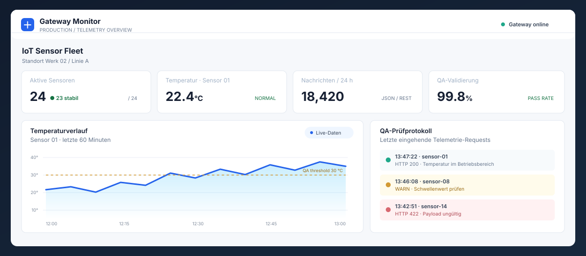

Projekt / IoT & QA
Interactive IoT & REST-API Protocol Simulator (QA Bench Demo)
Browserbasierter Simulator zur Visualisierung von REST-API- und JSON-Datenpaketen sowie automatisierten Plausibilitätsprüfungen für IoT-Sensordaten.
- JavaScript (ES6+)
- REST-API
- JSON Parsing
- IoT Telemetry
- QA Edge-Case Validation
- PHP

IoT Gateway / Telemetrie-MonitoringProblem und Lösung
Ein interaktiver Prüfstand zur Analyse von IoT-Kommunikationsprotokollen. Die Anwendung simuliert das Senden von Telemetriedaten (z. B. Temperatur, Luftfeuchtigkeit, System- und Batteriestatus) via REST-API als JSON-Payload an ein virtuelles Gateway. Im Hintergrund führt eine QA-Engine automatisierte Plausibilitäts- und Grenzwertprüfungen durch, etwa bei Schwellenwert-Überschreitungen, Sensorfehlern und ungültigen Payloads.